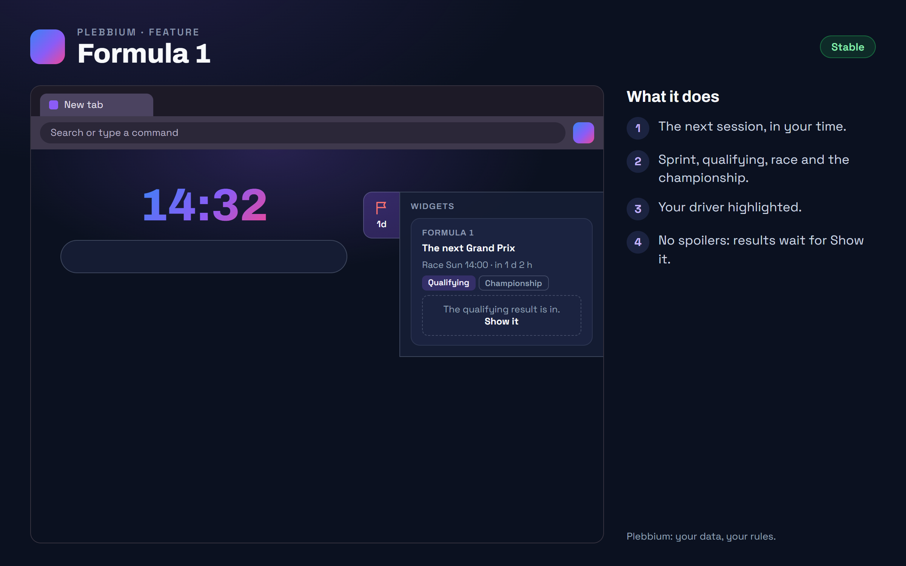

All features › Shipped › Formula 1
Formula 1
Stablesince features 0.13.1A card in the new tab's widgets strip with the next Formula 1 session in your time, then the latest sprint, qualifying or race result and the championship, your driver highlighted. Results wait for your click, so nothing is spoiled.

How to use it
- Turn it on: Plebbium settings › Widgets › Show Formula 1.
- Your driver: Plebbium settings › Widgets › Your driver.
- Spoilers: Hide results until I click (on to start).
When it arrived
Features 0.13.0Beta 7 Nov 2026 · Stable 13 Nov 2026 (3620)
Formula 1 in the widgets strip.
Why it works this way
No spoilers
Each new result - and the championship after a race, which would give it away - waits for Show it, so a replay stays a surprise.
Free, no account
The data comes from Jolpica F1, the free successor of the Ergast F1 data; results are kept once they are in.